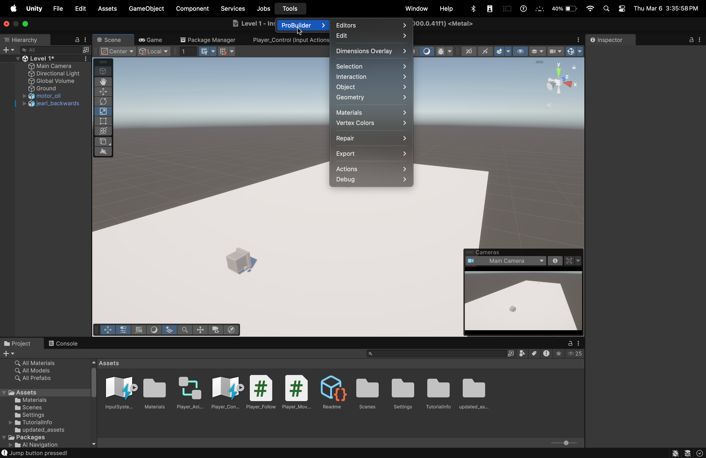
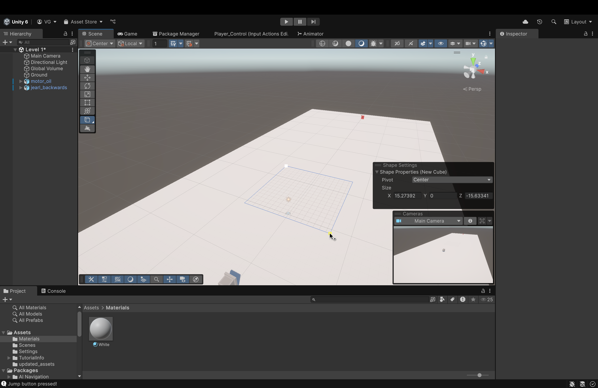
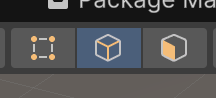
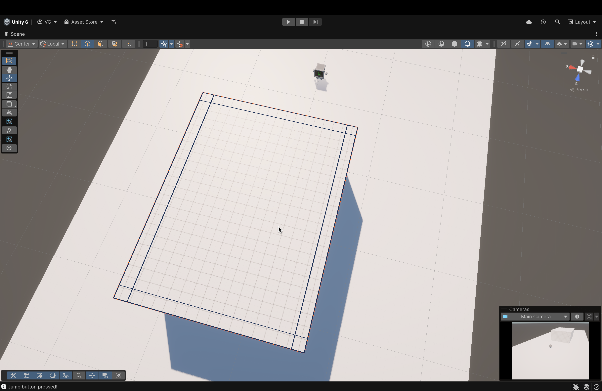
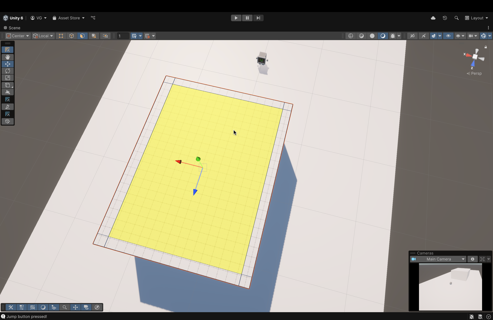
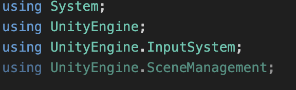

Now, we'll discuss a particular tool that we downloaded a while back:
Probuilder

- For the Mac folks (works the same for Windowns as well), hover over Tools up top, then hover over ProBuilder to open/view the menu.
- If you recall, earlier in the tutorial, we downloaded two packages: Unity glTFast and Probuilder.
- ProBuilder allows us to create shapes of different sizes and patterns.
- You might say, "Ok. So what?"
- Well, these shapes, no matter what size you make them in, will have their own colliders and renderers (with a slight caveat that we'll discuss later)
- Let's create a spike pit!
- To start, let's create a Cube
- In the ProBuilder menu, hover over Editors and find the Create Shape menu.
- Within that menu, click on Cube to enter build mode.
- To start, let's create a Cube

- Click and drag, in build mode, to see a grid pop up.
- This grid represents the base of our shape (a cube, in this case). As you hold down the left-click, you can drag that shape to whatever dimensions you want to size our base.
- For this tutorial, ensure that your base is somewhat of an rectangle which is longer on the z-axis than the y-axis.
- Think of a football field!
- If its not perfect, don't worry! We can resize its transformation values with numbers later.
- For this tutorial, ensure that your base is somewhat of an rectangle which is longer on the z-axis than the y-axis.
- This grid represents the base of our shape (a cube, in this case). As you hold down the left-click, you can drag that shape to whatever dimensions you want to size our base.
- Once you've decided on the proportions of your base, let go of left-click.
- Now, move your cursor up and you should see the shape "rise up".
- What you're seeing is a preview of what the final shape will look like
- Once you've chosen your desired height, press left-click once to finalize the shape
- Now, move your cursor up and you should see the shape "rise up".
- Now, if we want to edit the shape (if we didn't size it the correct way, let's say), we can do that by:
- Opening the ProBuilder menu from the Tools menu up above.
- Inside the ProBuilder menu, this time, hover your cursor over Edit
- In the menu that follows, click Edit Shape
- You will enter back into build mode (the same mode you were in when you were first creating the shape)
- One thing to remember: to change the scale parameters (i.e., size), you MUST do it from the Shape Settings menu and not the Component View on the right.
- Now, in the Shape Settings menu, change the Size parameters to the following values:
- X --> 17
- Leave Y as is
- Z --> 25
- Now, we need to change this rectangle into a pit (i.e. a concave rectangle with thick walls)
- We'll do this by Extrusion and Edge Loops.
- To begin, find the above icon in the vertical bar on the left of the Scene View.
- This icon will only be visible if you have selected a shape created using ProBuilder

- Along the top row of icons, you'll find these 3 icons as well (with the same color).
- From left to right:
- Vertex Selection = Allows you to select individual vertices and use them to change your shape however you want.
- Edge Selection = Allows you to select edges and use them to change your shape.
- Face Selection = Allows you to select faces to change
your shape.
- From left to right:

- Click on the Edge Selection icon to get started.
- You should all the edges turn dark black and when you hover, they should change colors.
- Pick an edge (I'll start with the one that's selected in the image).
- Right-click with the edge selected to open a menu
- In that menu, find and clickInsert Edge Loop.
- Here, you'll also see a shortcut to invoke this option. I suggest you use this shortcut because we'll be making a couple of these
- Here, you'll also see a shortcut to invoke this option. I suggest you use this shortcut because we'll be making a couple of these
- You should all the edges turn dark black and when you hover, they should change colors.
- Once you click Insert Edge Loop...
- ProBuilder will introduce a new edge perpendicular to the one you selected.
- I double-clicked on the Scene to make it full-screen.
- I double-clicked on the Scene to make it full-screen.
- ProBuilder will introduce a new edge perpendicular to the one you selected.
- Once you click Insert Edge Loop...
- ProBuilder will introduce a new edge perpendicular to the one you selected.
- I double-click on the Scene to make the scene full-screen.
- I double-click on the Scene to make the scene full-screen.
- ProBuilder will introduce a new edge perpendicular to the one you selected.
- Drag the edge over to the right.
- You want to space it a given distance from the rightmost edge (the original rightmost edge) and keep that distance consistent for the edge on the opposite side (when we place it).
- This ensures that our walls have an even thickness
- No need to make it perfect. Eyeballing will work just fine. Just keep them relatively consistent without any large differences.
- No need to make it perfect. Eyeballing will work just fine. Just keep them relatively consistent without any large differences.
- This ensures that our walls have an even thickness
- You want to space it a given distance from the rightmost edge (the original rightmost edge) and keep that distance consistent for the edge on the opposite side (when we place it).
- Now, let's select one of the longer edges (like the one shown in the image)
- Right-click to open the menu and click Insert Edge Loop
- With the newly created edge, drag it down towards the original bottom edge
- Orient the camera however you need to place this edge just right (whatever that is for you)
- Orient the camera however you need to place this edge just right (whatever that is for you)
Now, repeat the previous two steps to place the remaining two edges. The final product should look something like this

- Now, select the middle face (the biggest face) by switching to the Face Selection tool. We will now extrude
- Why did we do this?
- Placing these additional edges allowed us to create additional faces on top of an existing face.
- We can then select any one face (or multiple faces) and extrude (i.e. cave inwards or pull outwards), whichever we need to do.
- With the face selected, right-click to open the menu again and find Extrude Faces
- Now, drag the face down to extrude it (in this case, cave inwards)
- Once done, press
Escto exit ProBuilder
- Once done, press
Now, we have our pit ready. Next, we need to fill it with spikes. But, before that, let's make some adjustments in our player movement script!

- In our Player_Movement script, at the top, add the following import statement:
- using UnityEngine.SceneManagement;
- This will allow us to the use the Scene Management class, which will allow us to transition between scenes upon collisions.
- This will allow us to the use the Scene Management class, which will allow us to transition between scenes upon collisions.
- using UnityEngine.SceneManagement;
- Next, in the OnCollisionEnter function, add the else if statement in the image above after the first if statement.
- This statement uses the same functionality as the previous statement where it checks for a tag in the other object upon a collision with this object.
- This time, we're checking for an Obstacle tag.
- If the other object has this tag...
- We print an announcement to the console and...
- We reload our current scene (using its name).
- This is the reason why we imported that library from earlier.
- This is the reason why we imported that library from earlier.
- If the other object has this tag...
- Navigate back to the Editor
- Drag and drop the spike asset from within the updated_assets folder into your scene.
- To this spike game object...
- Create and assign a new tag
- Find and click the Tag dropdown in the Inspector menu to the right (having the spike asset selected).
- Click Add Tag....
- Click the plus icon.
- Name your new tag Obstacle.
- Hit Save.
- Reopen your spike asset's Inspector menu.
- Open the Tag dropdown and click the Obstacle tag to assign it to this asset.
- Add a Box Collider
- In the spike's Inspector Menu, click Add Component
- In the search bar, search for Box Collider
- Once found, press
Enteror click on it to add it.
- Create and assign a new tag
- Now, make some copies of the spike:
- Click on the modified spike asset and copy-paste it using
Ctrl+CandCtrl+V.- The copy is placed within the spike asset you copied from. So, drag the copy out and you'll see it.
- I would suggest having 5 spikes in total.
- We'll be able to resize them later.
- We'll be able to resize them later.
- Click on the modified spike asset and copy-paste it using
- Let's group the copies together!
- Inside of your Hierarchy (list of assets) to the left, right-click in an empty spot.
- Find and click the Create Empty option.
- This will create an empty asset (which we'll store our copies inside of)
- Name the new asset spike_row_1
- Now, place all of your spike assets inside of spike_row_1
- You might be asking: "Why couldn't we just apply the tag and collider to this row object? Why apply it to each spike individually?"
- Because, this newly created spike_row_1 asset is EMPTY
- It does not have a physical presence in our Scene.
- Therefore, it is not affected by any components that we apply to it
- You might be asking: "Why couldn't we just apply the tag and collider to this row object? Why apply it to each spike individually?"
- In the end, your spike assets should look something like the image above.
- Select the row from your hierarchy to move all of your spikes at once.
- Drag them into the pit and place them all the way in the backend
- This is where you'll have to do some trial-and-error to ensure it fits properly (both vertically and horizontally)
- Inside of your scene, in the vertical bar to the left (that has a bunch of options), select the Scale Tool which is the 5th option from the top
- Your axes should have boxes at the end of them if you picked the right tool.
- Use this tool to resize your row as you need to.
- Inside of your scene, in the vertical bar to the left (that has a bunch of options), select the Scale Tool which is the 5th option from the top
- Now, make copies of the row to fill the pit with spikes.
- Again, resize as necessary (it doesn't have to be perfect).
- Just make sure that the entire pit is covered with spikes and that none of the assets are clipping throught the walls of the pit.
- Just make sure that the entire pit is covered with spikes and that none of the assets are clipping throught the walls of the pit.
- Again, resize as necessary (it doesn't have to be perfect).
- We will now make some stairs (you can probably tell where I'm going with this)
- In the ProBuilder menu (up top, under Tools), hover your cursor over Editors
- Then, hover over Create Shape
- Now, in the next menu, click on Stairs
- The creation for the stairs is the same as the Cube from earlier.
- Create the base and then drag the cursor up to create the height of the shape.
- Create the base and then drag the cursor up to create the height of the shape.
- Try to get the height of the stairs almost level with the height of our cube (don't worry if it isn't since we'll be able to fine-tune this later)
- Use the Rotate Tool (which is the 4th one from the top in the bar to the left in the image above) to turn the stairs around.
- Use
CtrlorCmdto rotate in increments (instead of freeform rotation without increments)
- Using the Shape Settings menu of the newly created stairs.
- Adjust its height and length and move the stairs to ensure that it is flush against the pit wall and it is nearly level with the wall itself
- If it isn't perfect, don't worry. Just try to get as close as possible. Also, in the Shape Settings for the stairs, adjust the number of steps
- We want to move up the stairs smoothly. Try using a value of around 60.
- Adjust its height and length and move the stairs to ensure that it is flush against the pit wall and it is nearly level with the wall itself